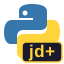

pydemetra


Python front-end to JDemetra+, which is a Java package for seasonal adjustment.


⚠️ This repo is under development and not fully tested. Use with caution ⚠️
Want to just get going? Head to the Quick Start page.
This project has no affiliation the original JDemetra+, but we’re grateful to its creators!
Functionality
pydemetra was inspired by the rjdverse R front-end to JDemetra+. Without that package, this one would not be possible. Not all of the functionality of either JDemetra+ or the R front-end is implemented in this package.
Implemented
- X-13ARIMA-SEATS seasonal adjustment (X-13, X-11, RegARIMA)
- TRAMO-SEATS seasonal adjustment (TRAMO, SEATS)
- Calendars and trading days — national calendars, fixed/Easter/weekday holidays, trading day regressors
- ARIMA modelling — SARIMA, UCARIMA, estimation, decomposition, simulation
- Regression variables — outliers (AO, LS, TC, SO), ramps, interventions, Easter/leap-year effects, periodic dummies, trigonometric variables
- Statistical tests — seasonality, normality, trading days, autocorrelation
- Time series utilities — aggregation, interpolation, differencing, length-of-period adjustment
- Distributions — t, chi-squared, gamma, inverse gamma, inverse Gaussian
- Splines — B-splines, natural/monotonic/periodic cubic splines
- Benchmarking specification
Not implemented
- STL decomposition
- State space models
- High-frequency seasonal adjustment
- Extended X-11
- Benchmarking and temporal disaggregation
- Revision analysis
- Trend-cycle filters
Prerequisites
- Python 3.11+
- Java 17+ (the JVM is started automatically on first use)
Most functions that interact with JDemetra+ Java classes require a running JVM. The JVM is started lazily on the first call — no manual setup needed as long as Java 17+ is on your PATH or JAVA_HOME is set.
Installing Java on MacOS
To install a recent version of Java, run
brew install openjdk
export PATH="/opt/homebrew/opt/openjdk/bin:$PATH"and then restart your terminal.
Development
- git clone repo
- branch
- install with development requirements using
uv sync - do the work you need to
uv run noxfor full test suite; everything should pass